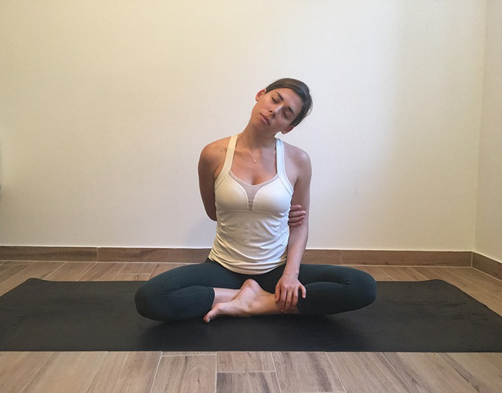
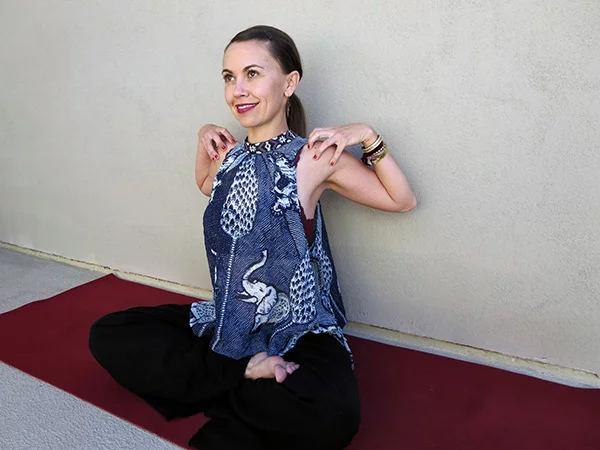
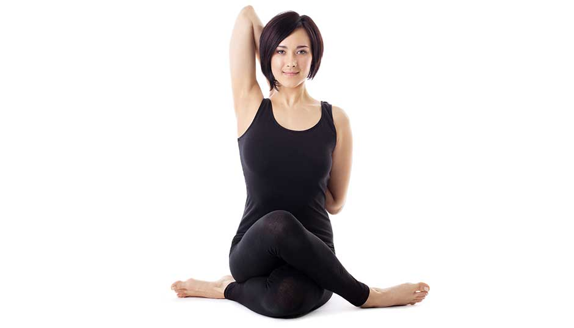
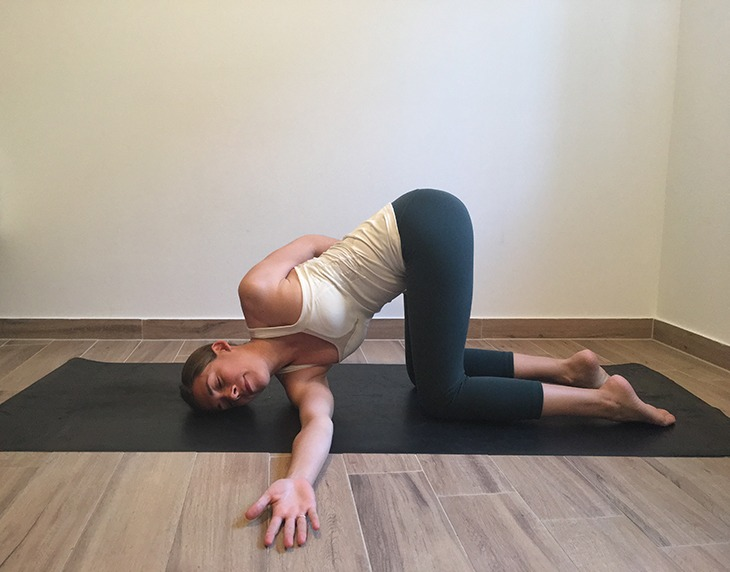
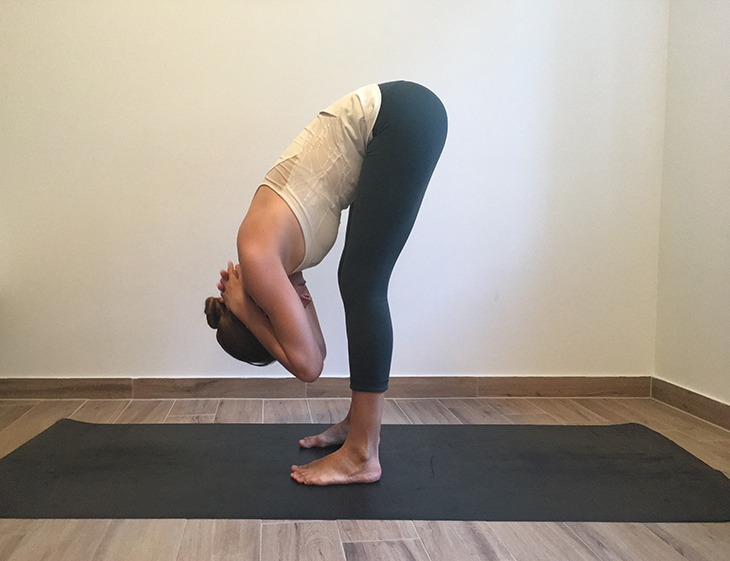
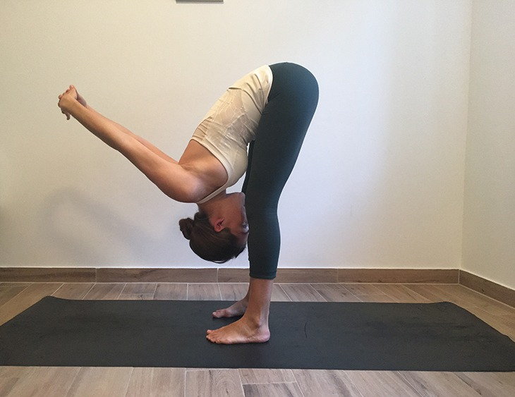
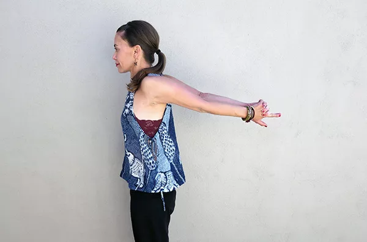
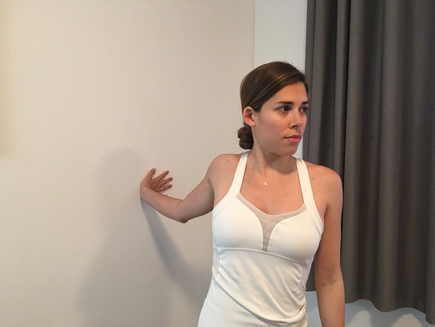

Yoga For Neck/Shoulder Pain
Yoga poses and yoga-inspired positions are helpful to stretch and strengthen the muscles in and around the neck and shoulder that tend to be either contracted or elongated when we move our necks out of neutral alignment.
Try to practice each pose with mindfulness and only move within your own limits. Consistency and patience are key factors to reducing the pain from tech neck, so take it slow.
1 Neck Stretch

- Start seated in any comfortable position (you can sit in a chair or on the floor). Try to align the crown of your head over your shoulders and your shoulders over your hips. Find length throughout your entire back body by sitting up nice and tall.
- Maintaining this posture, reach your right arm behind your back and take a hold of your left bicep (if this feels out of reach for you, you can wrap a yoga strap or a towel around your left bicep and then hold onto that with your right hand). Allow your left arm to rest in your lap and relax your shoulders down away from your ears.
- Inhale to reach the crown of your head toward the sky, and exhale to gently release your left ear toward your left shoulder. Soften your shoulders and your jaw as you lengthen through the entire right side of your neck. You can experiment with turning your gaze (and chin) down or up to find the angle of the stretch that best serves you.
- Hold for 5-10 deep breaths and then repeat on the opposite side, switching your arms and the tilt of your head.
2Shoulder Rolls

- Stand or sit comfortably with a straight spine
- Place your fingertips on top of your shoulders. As you proceed through the following movements, hold each one for several breaths.
- Pull your elbows toward each other in the front of the body to stretch out the shoulder blades and upper back.
- Pull them up to stretch the triceps.
- Fan them to the side to stretch out the chest and front of the shoulders.
- Pull them towards each other in the back of the body for a deep shoulder and chest stretch.
3 Cow Face Pose

- Slide your knees toward your center line, stacking the right knee directly over the left. It may be helpful to come forward onto your hands and knees to do this. The right knee should be just in front of the left knee. Then separate your feet and come back to sit between them.
- Bring your left arm straight up toward the ceiling.
- Bend the left elbow, bringing the left hand to the back of your neck. You can use your right hand to gently shift the left elbow toward your midline.
- Lift the right arm out to the right side, bend the elbow, and bring the right arm up the center of the back.
- Clasp hands behind your back.
- Draw both elbows toward the center and keep your head from tilting forward by pressing the back of your head into your left arm. Breathe evenly.
- Release your arms on an inhale and try the pose with the left leg and right arm on top.
4 Shoulder Thread the Needle

- Start on all fours in a tabletop position with your shoulders aligned over your wrists and your hips aligned over your knees. As you inhale, reach your right arm up toward the sky and open your chest toward the right.
- As you exhale, reach your right arm underneath your left shoulder, “threading the needle” as you lower your right shoulder and right cheek to either the floor, a block, a bolster or a blanket.
- You can stay as you are, or if you’d like to deepen the release, you can wrap your left arm around your lower back (perhaps even hooking your fingers into your hip crease) to twist your chest open further toward the left. Hold for about 5-10 deep breaths before repeating on the other side.
5 Forward Fold with Neck Stretch

- Place your feet about hip-distance apart and hinge forward from the hips into a standing forward fold, or classic Uttanasana. Feel free to bend your knees as much as you would like to. Relax the weight of your head and torso and let everything surrender downward with gravity.
- Interlace your fingers behind your neck and soften the weight of your arms toward the floor. Be cautious not to push or pull on your neck here – instead, simply allow the added weight of your arms to move you further into your release. Hold for about one minute.
6 Forward Fold with Chest Shoulder Stretch

- Start in the previous forward fold, but this time, interlace your fingers behind your back and work toward straightening your arms as much as possible over your head. Reach your arms first straight up and then allow them to surrender with gravity towards the front of your mat.
- Draw your shoulder blades toward each other and broaden your chest. Allow your torso and your head to be heavy and relaxed. Hold for about one minute.
7 Backward Hand Clasp

- Stand with your feet hip width apart.
- Interlace your fingers behind you and press your palms together.
- Lift the arms as high as you can until you feel the stretch in the front of your shoulders.
- Hold the pose for eight to 10 breaths.
8 Wall Chest Shoulder Opener

- Find a neutral stance facing a wall and stand one foot away from it. Stand up tall and stack your shoulders directly above your hips. Heel-toe your feet hip-distance apart and place a micro-bend into your knees. Gently activate your core to support your spine.
- Place your right hand on the wall in line with your shoulder and point your fingers toward the right. Maintaining your neutral spine, slowly begin to turn your torso away from the wall and walk your feet toward the left as far as it feels comfortable. Breath into the release through your chest and shoulders for about 5-10 deep breaths before repeating on the opposite side.
Load More